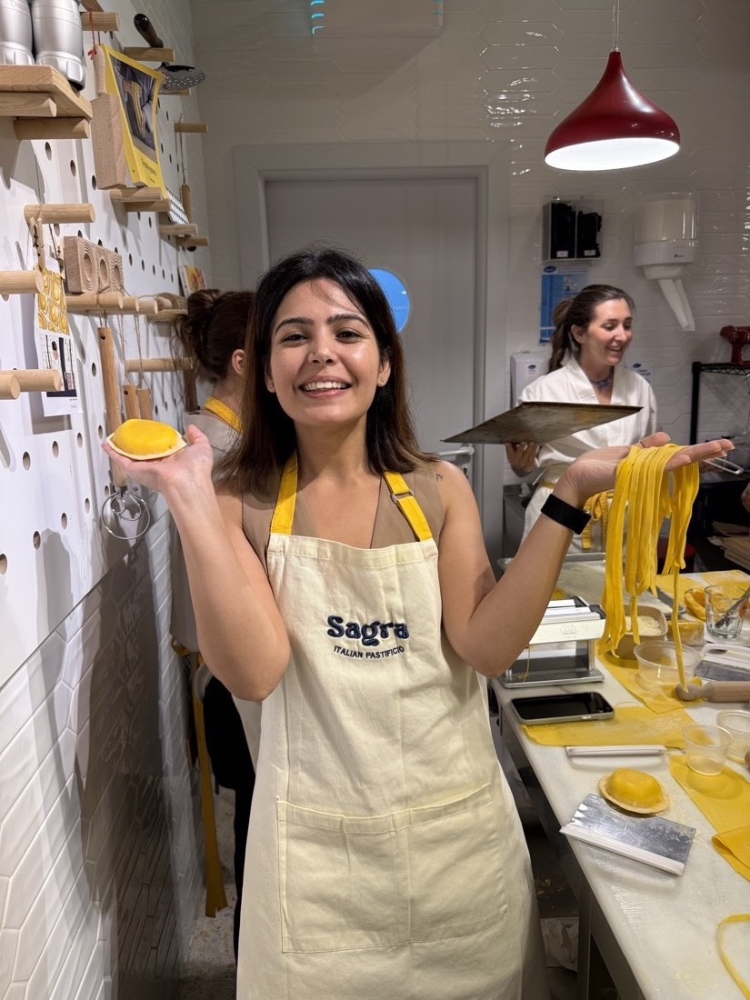

Hey! I'm Gauravi· product designer & researcher in SF. ☕

Finding happiness in learning new recipes.
Best thinking happens mid-run.
India → Dubai → SF. Three homes.
Happiest at the top of a climb.
Off the clock: pottery & a good book.
Let's build something delightful. 🧡
what i do /
- Product Design
- UX Research
- Design Systems
- Prototyping
- AI-Native Workflows
- Workshops & Facilitation
worked with /